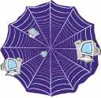

From http://www.w3schools.com (Copyright Refsnes Data)
|  |
WWW - The World Wide WebWWW is most often called the Web. The Web is a network of computers all over the world. The computers on the Web communicate using standard languages. The World Wide Web Consortium (W3C) makes the Web standards. |
From http://www.w3schools.com (Copyright Refsnes Data)